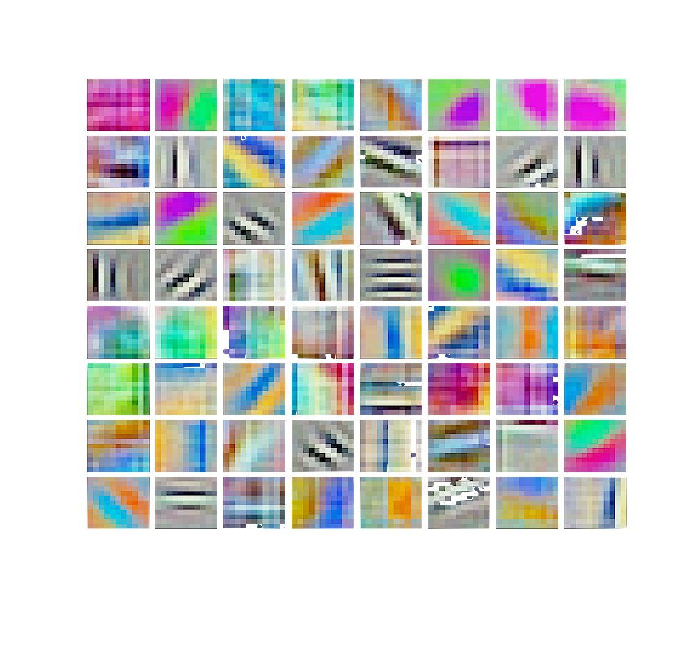

Research
| interpretable ml what is interpretability? |
neuroscience Connectomics , neural coding |
|---|---|
|  |  |
| year | title | authors | tags | paper | code | slides |
|---|---|---|---|---|---|---|
| 2019 | disentangled attribution curves for interpreting random forests and boosted trees | devlin, singh, murdoch & yu | ml | arxiv | -- | |
| 2019 | interpretable machine learning: definitions, methods, and applications | Murdoch*, Singh*, Kumbier, Abbasi-Asl, & Yu | ml | arxiv | -- | |
| 2019 | hierarchical interpretations for neural network predictions | Singh*, Murdoch*, & Yu | ml | ICLR | ||
| 2018 | large scale image segmentation with structured loss based deep learning for connectome reconstruction | Funke*, Tschopp*, Grisaitis, Sheridan, Singh, Saalfeld, & Turaga | ml, neuro | TPAMI | -- | |
| 2018 | linearization of excitatory synaptic integration at no extra cost | Morel, Singh, & Levy | neuro | J Comp Neuro | ||
| 2017 | a consensus layer V pyramidal neuron can sustain interpulse-interval coding | Singh & Levy | neuro | Plos One | ||
| 2017 | a constrained, weighted-l1 minimization approach for joint discovery of heterogeneous neural connectivity graphs | Singh, Wang, & Qi | ml, neuro | NIPS Workshop |
Showing 1 to 7 of 7 entries